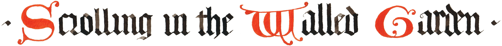

Scrolling in the Walled Garden, 2023
Real-time simulation (Unity), WEBGL-enabled web browser
Dimensions variable
Two-dimensional assets in collaboration with Ksenia Cherniavska
Two-dimensional game assets were remixed from historical illuminated manuscripts and content created in collaboration with Ksenia Cherniavska, a calligrapher and illuminated manuscript painter. Three-dimensional assets were modeled in Autodesk Maya and purchased or downloaded from online game asset marketplaces.